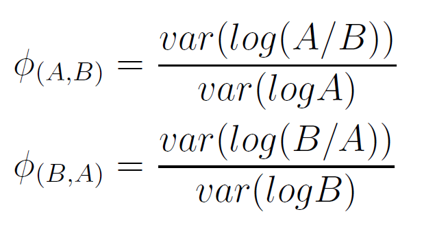
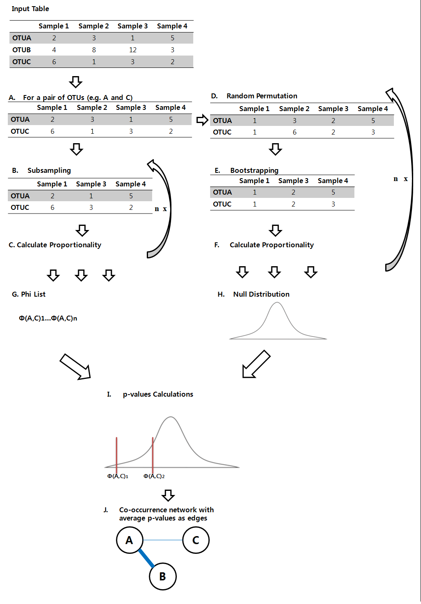

The methodology implements the goodness of fit to proportionality measure, which is calculated as follows for a given pair of variables, A and B:

General Description of the Methodology
This measurement (phi-value) is used to detect any significantly co-occurring interactions. Edge attributes are theoretical average p-values calculated using a hypothesis test of subsampled phi values with a null distribution generated using bootstrapping of randomly permuted data. The null hypothesis is that there is no significant difference between subsampled phi value and the randomly permuted phi values. Thus, the significant (low) p-value for an interaction represents that the interaction has statistically sufficient evidence to reject that it is not different from a random interaction.
A general workflow for an inference of a co-occurrence network is described in Figure 1. The methodology accepts a table of microbial abundance data as an input. The table can have OTUs as columns and samples as rows or vice versa. The method was written in Python and Theano variables were used for computation on graphical processing unit (GPU) (Bergstra et al., 2010). The method implemented the following python packages: os, sys and argparse, re, json, networkx, pandas, numpy, and statsmodels.sandbox (Schult and Swart,
2008; McKinney, 2010; Van Der Walt et al., 2011; Seabold and Perktold, 2010).
The methodology is further described in Supplementary Methods.

Figure 1. A workflow of co-occurrence network inference. Input tables should contain abundance values. Samples with only zeros are removed because proportionality has log in its equation and log of zero is undefined. A. The analysis works on a pair of OTUs. B. Samples with zeros are excluded for subsampling (sampling without replacement), and the number of all the nonzero samples, a constant X, is measured. X-1 nonzero samples (columns) are sampled. C. Proportionality value is calculated using the subsampled data table. B and C are repeated for n, number of sampling iterations, times. D. The data table from A is randomly permuted. The permutation is done for each OTUs separately. E. Samples with zeros are excluded for bootstrapping (sampling with replacement), X-1 nonzero samples are sampled with replacement). F. Proportionality value is calculated using the bootstrapped data table. D, E, and F are repeated for n times. G. n number of proportionality measures from subsampling makes a list. H. n number of porportinality measures from bootstrapping forms a null distribution. I. n number of p-values are calculated by comparing each value of proportionality measures from the list with the null distribution. Multiple testing correction of the p-values calculated is done using false discovery rate (FDR) estimation. J. An average of the adjusted p-values is used as an edge attribute for the pair of OTUs. All the steps are repeated for all the possible pairs of OTUs to infer a co-occurrence network.
Validation of the Methodology
The proportionality method was applied to simulated data sets and ecological datasets from Weiss et al. for comparison with the other inference techniques. Weiss and colleague generated the simulated datasets using Copula models. Of those simulated datasets, raw abundance dataset and rarefied dataset of the raw abundance dataset were used for this research. Each set of data has five data tables with variations in neff, a diversity index representing the number of effective entities in the dataset calculated by Inverse Simpson (Table 1) (Weiss et al., 2016). Also, each data table has 80 samples with 524 OTUs. The raw abundance datasets have absolute abundances. The networks for the raw abundance datasets were inferred with alpha value of 0.001 and 100 sampling iterations. The rarefied datasets are subsamples of raw abundance datasets with a constraint on the total number of counts, 2000, per sample. For the rarefied datasets, 0.001 alpha value was used for the network inference, while the number of sampling was 50. The ecological datasets contain various types of interactions such as mutual, commensal, parasitic, and competitive interactions. Five ecological data tables were used in this study, and their characteristics are summarized in Table 1. 0.001 alpha value and 100 sampling iterations were used for the network inference.
Table 1. Datasets used in the study. Tables 6 and 7 were ecological tables, having competitive, mutual, commensal, amensal, parasitic, obligate, and partial oligate syntrophic relationships of various strengths (2, 3, and 5) as well as two-species (OTU1 acts on OTU2) and three-species (OTU1 and OTU2 together act on OTU3) interactions. Tables 16-18 were again ecological tables, except with one-dimensional linear relationships only. The values were relative abundance, 50% sparsity, and relative abundance of the 50% sparsity table relatively.
Table Number
Number of Samples
Number of OTUs
4s
80
524
6
50
1230
7
50
1280
16,17,18
50
720
Application using Stroke case-control study
The proportionality method was applied to datasets from a stroke case-control study of dysbiosis in gut microbiome (Yin et al., 2015). Abundance datasets of 98 healthy control and of 173 stroke (or transient ischemic attack) patients were acquired from EBI metagenomics database. Bacterial DNA was obtained from the fecal samples. The network inference was done at genus level with 0.05 alpha value and variations in the number of sampling iterations.